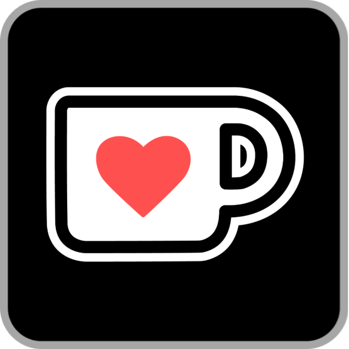

<!--
MomentariyModder Website 7.0.0 by MomentariyModder
The source code is available on GitHub!
-->

<!DOCTYPE html>
<html lang="en">
<head>
  <link rel="icon" href="../img/themes/active/favicon.png">
  <title>Important announcements! | Blog | MomentariyModder</title>
  <meta name="viewport" content="width=device-width, initial-scale=1, maximum-scale=1" />
  <meta name="title" content="Important announcements! | Blog | MomentariyModder">
  <meta name="description" content="Welcome to my website! I am MomentariyModder, or as my friends and acquaintances often call me, Modder. I'm 20 years old, and I'm from Belarus (a small country in Europe bordering Russia and Ukraine). I also like to create almost any content for Minecraft, that is: mods, maps, resource packs, servers.">
  <meta name="keywords" content="Minecraft, Mods, MomentariyModder">
  <meta name="theme-color" content="#4bb4f1">


  <script src="https://code.jquery.com/jquery-3.3.1.min.js"></script>
  <script src="https://cdn.jsdelivr.net/npm/handlebars@latest/dist/handlebars.js"></script>
  <script src="https://mcapi.us/scripts/minecraft.min.js"></script>
  <script src="../js/main.js"></script>
  <script src="../config.js"></script>
  <script src="../js/lightbox.min.js"></script>
  <script src="https://cdn.jsdelivr.net/npm/@widgetbot/crate@3" async defer>
  new Crate({
    server: '696094539823448085',
    channel: '1156033421940891688'
  })
  </script>
  
  <script>tosAgreed = true</script>
  
  <link rel="stylesheet" href="https://cdnjs.cloudflare.com/ajax/libs/font-awesome/6.7.1/css/all.min.css"/>
  <link rel="stylesheet" href="../css/style.css">
  <link rel="stylesheet" href="../config.css">
  <link href="../css/lightbox.css" rel="stylesheet" media="all">

</head>


<body>

  <div id="target"></div>

  <script id="template" type="text/x-handlebars-template">

  <header>
    <div class="hero" id="hero">
      <a href="#!"><h1 style="padding-top: 3%;"></h1></a>
    <p> </p>
    <div class="news-card" align="center">
	  <a href="../" class="btn"><i class="fa-solid fa-house"></i> Home</a>
      <a href="../blog" class="btn"><i class="fa-solid fa-newspaper"></i> Blog</a>
	  <a href="#links" class="btn"><i class="fa-solid fa-share"></i> Links</a>
    </div>
	<p> </p>
	</div>
  </header>
  
  <section class="dark" id="blog">
	<h1><i class="fa-solid fa-newspaper"></i> Blog</h1>
    <div id="news">
	<div class="news-card" align="center">
	<a>ANNOUNCEMENT</a><br>
	<a href="../img/blog/important-announcements/head.png" data-lightbox="roadtrip"></a>
	<h1 align="center">Important announcements!</h1>
	<i>20.09.2025, 15:30</i><br>
	</div>
	<p>
	Hello to all readers of this post!<br><br>
	Today I have some important announcements to make. So, let's begin:<br><br>
	<h3>Discontinuation of support for three of my projects</h3>
	As of the publication of this post, I am discontinuing support for three projects, namely: Night Vision Helmets, Created Spawn Eggs, and Hunger Preview.<br><br>
	The reason for discontinuing support for these projects is essentially the same, and I would say obvious. It is that I am personally not interested in supporting these projects, as they are all boring and have no future. In the near future, I will open their source code and anyone will be able to fork them.<br><br>
	<h3>Website: Update 8.0.0</h3>
	As you may have noticed, I am working on a major update to the website. You can follow its progress on GitHub. However, for now, I will only present a few changes:<br>
	1. Updating my logo and brand for my projects.<br>
    The reason is simple: to prevent potential problems with Mojang Studios for using one of their trademarks, namely the Creeper face.<br>
	2. Updating themes.<br>
	The reasons are also simple: updating the logo (see above) and updating most of the textures in almost all projects.<br>
	3. And much more!<br><br>
	<h3>Update to Minecraft 1.21.8 and 1.21.9</h3>
	So, I haven't updated my projects to the new versions of Minecraft for a long time. Here are the reasons why:<br>
	1. Adding support for new versions of Minecraft in MCreator takes a lot of time because the programme developer writes version generators from scratch.<br>
	2. My projects use plugins created by the MCreator community. But for every major MCreator update, they need to be ported, which also takes a lot of time. Plus, there is the human factor. Some developers may simply disappear. However, since this is a community, there are people who port their work. But developers are gradually returning. For example, Nerdy (one of the most popular plugin developers) disappeared for several months, but damn it, his plugins were so useful that most people stayed on the old versions of MCreator.<br>
	3. And, of course, seasonal drops. Previously, when major updates were released, most mod developers followed this pattern: wait for a more or less stable minor version after a major update and work on updating it, for example, 1.19.2 or 1.20.1.  But the drops are so frequent that we don't have time to update our projects for them. MCreator has also added support, for example, it now supports 1.21.1 and 1.21.4. But during this time, four new versions have already been released, and another one is in the works. Because of this, I decided to skip 1.21.4 and wait for a newer version.<br><br>
	At the moment, the developer of MCreator is preparing version 2025.3, which will add support for Minecraft 1.21.8. And here's my plan: as soon as MCreator 2025.3 and all the necessary plugins are released, I will start updating all supported projects to 1.21.8. After that, I will prepare content updates for two versions of Minecraft at once, namely 1.21.1 and 1.21.8. It is important to note that there are no plans to update to the next versions of Minecraft; Mojang is currently preparing 1.21.9. But it is not certain that the MCreator developer will have time to add support for it. But I have prepared the png files in advance. And I will continue to prepare them, in case anyone else needs them. You can find them in the ‘branding’ repository on my GitHub.<br><br>
	<h3>Return of Fabric support?</h3>
	After Goldorion (developer of Fabric Generator for MCreator) left the MCreator community and discontinued support for Fabric Generator, I decided to discontinue support for the Fabric loader. At that time, there were no alternatives, and it was difficult for me to support two loaders at the same time. But after such a long time, an analogue has been released, and Goldorion's legendary Fabric Generator has returned. He himself claims that he has little involvement in this. But nevertheless, it happened, and no one believed it anymore. Moreover, Fabric Generator has moved to Minecraft version 1.21.8.<br><br>
	BUT I have decided NOT TO RETURN TO FABRIC! It's simple, I don't see the point in it. Connector and Kilt have already appeared, which implement support for one mod loader on another loader. But the only difference between them is that Connector is made for NeoForge and adds support for mods made for Fabric, while Kilt is made for Fabric and adds support for mods made for Forge 1.20.1, with support for NeoForge mods planned. I am trying to support two versions of Minecraft, which is already quite difficult for me, so imagine what it would be like if I also had to support two loaders. I hope you will accept my decision and continue to use my projects. Thank you in advance for your understanding.<br><br>
	This post ended up being quite lengthy. I did not anticipate that. Nevertheless, thank you for taking the time to read it. It was important for me to make these announcements. I hope I can get back into the swing of things and continue developing my projects. You can support me in any way you like, whether it's by subscribing to my social media accounts, donating money, or simply downloading one of my projects from official sources. Good luck!
	</p>
	<p align="center"><i class="fa-solid fa-user"></i> MomentariyModder (Author)</p>
	</div>
	<p> </p>
	<div id="news">
	<div class="news-card" align="center">
	<h2>Comments will be back soon!</h2>
    </div>
    </div>	
  </section>
  <section class="dark">
	<div class="news-card" align="center">
	<a href="../blog/cmd-3.11.0-6.1.0" class="btn2"><i class="fa-solid fa-arrow-left"></i> Previous post</a>
	<a href="../blog" class="btn2"><i class="fa-solid fa-newspaper"></i> Back to Blog</a>
	<a href="../blog/situation-on-modrinth" class="btn2"><i class="fa-solid fa-arrow-right"></i> Next post</a>
	</div>
  </section>
  
  <section class="light">
    <h1><i class="fa-solid fa-share"></i> Links</h1>
    <div id="links" align="center">
	  <a href="https://discord.com/invite/9XqgjRd"></a> 
	  <a href="https://t.me/momentariymoddertgk"></a> 
	  <a href="https://twitter.com/momentariymoder"></a>	 
	  <a href="https://bsky.app/profile/momentariymodder.bsky.social"></a>
	  <a href="https://www.curseforge.com/members/momentariymodder"></a> 
	  <a href="https://modrinth.com/user/momentariymodder"></a> 
	  <a href="https://github.com/MomentariyModder"></a>
	  <a href="https://patreon.com/momentariymodder"></a>
	  <a href="https://boosty.to/momentariymodder"></a>
	  <a href="https://ko-fi.com/momentariymodder"></a>
	  <a href="https://www.buymeacoffee.com/momentariymodder"></a>
	  <a href="https://www.donationalerts.com/r/momentariymodder"></a>
    </div>
  </section>
  
  
  <footer>
    <a>&copy; {{server_port}} {{server_name}}. All Rights Reserved.</br>{{server_name}} is not affiliated with or endorsed by Mojang Studios or Microsoft<br>{{server_ip}}</a>
	<a></a>
	
  </footer>
  </script>
  <script src="../js/license.js"></script>
  
</body>
</html>